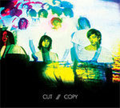

Readers' Top Albums of 2008
By No Ripcord Staff
 10. Fucked Up
10. Fucked Up
 7. Fuck Buttons
7. Fuck Buttons
 5. Fleet Foxes
5. Fleet Foxes
 4. Portishead
4. Portishead
 3. Hercules and Love Affair
3. Hercules and Love Affair
 1. TV On The Radio
1. TV On The Radio
“TV on the Radio managed to follow Return to Cookie Mountain with an album every bit as unique and challenging. What makes Dear Science, so good is that only after numerous listens does it reveal its depth - the anger, passion and heartbreak. It's not an easy album to love, but one which offers something new and exciting each time it's heard.”
Every December since 2002, No Ripcord has taken pride in publishing a Top Fifty Albums list, which draws on the collected thoughts of our writing team.This year we decided to offer you, our devoted readers, the chance to take part in the end of year shenanigans.
Everyone's votes have been tallied up and the results are in:
#25 to #11:
The lower reaches of the Readers’ Top 25 includes some great, overlooked releases from 2008, many of which we haven’t reviewed (yet). This feature might focus on the top ten, but don’t forget to check out some of these less heralded picks.
25. Alaska in Winter: Dance Party in the Balkans (Regular Beat Recording Co.)
24. The Gaslight Anthem: The '59 Sound (Sideonedummy)
23. Vessels: White Fields and Open Devices (Cuckundoo)
22. Elbow: The Seldom Seen Kid (V2)
21. Emiliana Torrini: Me and Armini (Rough Trade)
20. Erykah Badu: New Amerykah Part One (4th World War) (Universal Motown)
19. The Ruby Suns: Sea Lion (Sub Pop)
18. No Age: Nouns (Sub Pop)
17. M83: Saturdays = Youth (Mute)
16. Santogold: Santogold (Downtown / Atlantic)
15. The Bug: London Zoo (Ninja Tune)
14. Vampire Weekend: Vampire Weekend (XL)
13. Dodos: Visiter (French Kiss)
12. Gang Gang Dance: Saint Dymphia (Warp / Social Registry)
11. Okkervil River: The Stand Ins (Jagjaguwar)
. . .
10. Fucked Up“The Chemistry of Common Life” (Matador)
[Staff list: #45]
The finest punk record of 2008? We certainly thought so and we’re glad you agree. None of the voting masses provided a suitable soundbite for this album, unfortunately, so I'll pass you over to Sean Caldwell instead:
"Whatever shortcomings The Chemistry Of Common Life present, and there are very few, Fucked Up cancels them out with some imagination and a refusal to so easily fit into the Mallternative crowd. Yes, their enemies are nothing new, but they tackle them with an artistically realized fury and, from what I understand, a live act that resembles the notoriousness of GG Allin. Whether or not they wind up being as legendary as their heroes remain to be seen, but at least they’re trying. As punk rock goes these days, The Chemistry Of Common Life is a step in the right direction."
9. Laura Marling
“Alas I Can’t Swim” (Virgin)
[Staff list: Not in Top 50]
Young British singer-songwriter Laura Marling might not have made our staff Top 50, but Ed from Sheffield couldn’t get enough of Alas I Can’t Swim in 2008:
“Laura Marling has been a revelation for me this year. It's brought on an acoustic obsession. Her vocals are so mature for an 18yr old and it’s nice to hear a decent British artist for a change.”
8. Cut Copy
“In Ghost Colours”(Modular)
[Staff list: #29]
Here’s another album that seems to have been underappreciated by the No Ripcord staff. We didn’t even get around to reviewing Cut Copy’s In Ghost Colours, but it clearly had a big impact on your year.
5-8-6 from Sydney sees his fellow Australians as “a new form of New Order”. We can’t argue with that.
7. Fuck Buttons“Street Horrrsing”(ATP)
[Staff list: #15]
If I learned one thing from conducting this Readers’ Poll, it’s that you guys like sweary band names just as much as us. A few of you just seem to like swearing in general, actually. Thankfully, Ryan from Norman, Oklahoma was able to keep his summary of Street Horrrsing nice and clean:
“This album shows us that music is still progressing and music is still important and that some artists are still pushing forward with sounds and noise; creating a texture that blends between organic and inorganic music; allowing the musical box we know to keep expanding.”
6. The Walkmen
“You & Me” (Gigantic)
[Staff list: Not in Top 50]
A surprise (criminal?) omission from our staff list, the undeniable charms of The Walkmen’s You & Me did not escape your attention. Josh of Greensboro, North Carolina explains why:
“The Walkmen have always sounded like gin-soaked nostalgia, and on this album more than any of their others, they use that sound to make a unique and affecting collection of songs. I can't think of any other 2008 album I listened to quite as much, and like all great albums, each listen revealed a new favourite track.”
5. Fleet Foxes“Fleet Foxes” (Sub Pop)
[Staff list: #1]
It seems our favourite record of the year fared pretty well in the Readers’ Poll, too. Michael from Melbourne might have sceptical at first, but those soaring melodies inevitably won him over:
“I have to admit when I first heard of Fleet Foxes I assumed they were another of these indie-folk-pop-twee-whatever bands that I don't have time for (and the band name didn't help). But once I heard a few songs I was hooked and had to get the album, which is just about perfect from start to finish (except the 'red squirrel' intro but I can forgive that...)”
4. Portishead“Third” (Island)
[Staff list: #2]
Everyone seemed to agree that 2008 was a good year for Portishead. Few named it their #1, but a startling 19% of readers named Third in their top five. This quite closely mirrors the voting behaviour of the No Ripcord staff; Portishead received more votes in total than the Fleet Foxes' album, but not a single writer named it his or her number one record of 2008.
Nevertheless, we can all agree this Third is a truly heart-warming return to form for one of the most important British bands of the last fifteen years.
3. Hercules and Love Affair“Hercules and Love Affair” (DFA)
[Staff list: #33]
A big readers’ favourite, I wonder if the No Ripcord staff overlooked this remarkable album when we were drawing up our personal end of year lists?
“This debut is epic yet intimate. It borrows from the past yet never sounds dated. The vocals are inspired and heartfelt. This is dance music with real heart and soul. It's easily the most confident and rewarding debut/album of any artist this year.” (RS Huff, Philadelphia)
2. Deerhunter
“Microcastle / Weird Era cont.” (Kranky / 4AD)
[Staff list: #6]
Atlas Sound just missed out, but there was plenty of love for Bradford Cox in our Readers’ Poll, with Deerhunter’s third album easing into second place, way ahead of its nearest rival. Jorge from Colombia explains why Microcastle meant so much to him this year:
“Rarely is the combination of tenderness and creativity as revealing as it is on Microcastle. Brandon Cox tried hard to make a fantastic experience full of light, and the result is masterpiece that will earn many fans in the years to come.”
1. TV On The Radio“Dear Science” (4AD)
[Staff list: #5]
While Dear Science received glowing reviews pretty much everywhere else, Alan Shulman’s controversial critique generated a fierce debate that demonstrated just how much this release split opinions. I was not surprised to see TVOTR topping our inaugural Readers’ Poll, and while I’m not a huge fan of the album myself, I consider it a fascinating winner. As it’s your poll, I’ll leave the final word to Ryryn from Canada:
“TV on the Radio managed to follow Return to Cookie Mountain with an album every bit as unique and challenging. What makes Dear Science, so good is that only after numerous listens does it reveal its depth - the anger, passion and heartbreak. It's not an easy album to love, but one which offers something new and exciting each time it's heard.”
. . .
So, that's what you thought. To read (or re-read) our staff Top 50, please click here.
22 December, 2008 - 07:55 — No Ripcord Staff